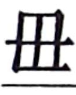

史记卷四十六
田敬仲完世家第十六
陈完 者，陈厉公他 之子也。完 生，周 太史过陈 ，陈厉公 使卜完 ，卦得观 之否 ：“是为观国之光，利用宾于王。此其代陈 有国乎？不在此而在异国乎？非此其身也，在其子孙。若在异国，必姜姓 。姜姓 ，四岳之后。物莫能两大，陈 衰，此其昌乎？”
厉公 者，陈文公 少子也，其母蔡 女。文公 卒，厉公 兄鲍 立，是为桓公 。桓公 与他 异母。及桓公 病，蔡 人为他 杀桓公鲍 及太子免 而立他 ，为厉公 。厉公 既立，娶蔡 女。蔡 女淫于蔡 人，数归，厉公 亦数如蔡 。桓公 之少子林 怨厉公 杀其父与兄，乃令蔡 人诱厉公 而杀之。林 自立，是为庄公 。故陈完 不得立，为陈 大夫。厉公 之杀，以淫出国，故春秋 曰“蔡 人杀陈他 ”，罪之也。
庄公 卒，立弟杵臼 ，是为宣公 。宣公 二十一年，杀其太子禦寇 。禦寇 与完 相爱，恐祸及己，完 故奔齐 。齐桓公 欲使为卿，辞曰：“羁旅之臣幸得免负檐，君之惠也，不敢当高位。”桓公 使为工正。齐懿仲 欲妻完 ，卜之，占曰：“是谓凤皇于蜚，和鸣锵锵。有妫 之后，将育于姜 。五世其昌，并于正卿。八世之后，莫之与京。”卒妻完 。完 之奔齐 ，齐桓公 立十四年矣。
完 卒，谥为敬仲 。仲 生稺孟夷 。敬仲 之如齐 ，以陈 字为田氏 。
田稺孟夷 生湣孟庄 ，田湣孟庄 生文子须无 。田文子 事齐庄公 。
晋 之大夫栾逞 作乱于晋 ，来奔齐 ，齐庄公 厚客之。晏婴 与田文子 谏，庄公 弗听。
文子 卒，生桓子无宇 。田桓子无宇 有力，事齐庄公 ，甚有宠。
无宇 卒，生武子开 与釐子乞 。田釐子乞 事齐景公 为大夫，其收赋税于民以小斗受之，其禀予民以大斗，行阴德于民，而景公 弗禁。由此田氏 得齐 众心，宗族益强，民思田氏 。晏子 数谏景公 ，景公 弗听。已而使于晋 ，与叔向 私语曰：“齐国 之政其卒归于田氏 矣。”
晏婴
卒后，范
、中行氏
反晋
。晋
攻之急，范
、中行
请粟于齐
。田乞
欲为
乱，树党于诸侯，乃说景公
曰：“范
、中行
数有德于齐
，齐
不可不救。”齐
使田乞
救之而输之粟。
景公 太子死，后有宠姬曰芮子 ，生子荼 。景公 病，命其相国惠子 与高昭子 以子荼 为太子。景公 卒，两相高 、国 立荼 ，是为晏孺子 。而田乞 不说，欲立景公 他子阳生 。阳生 素与乞 欢。晏孺子 之立也，阳生 奔鲁 。田乞 伪事高昭子 、国惠子 者，每朝代参乘，言曰：“始诸大夫不欲立孺子 。孺子 既立，君相之，大夫皆自危，谋作乱。”又绐大夫曰：“高昭子 可畏也，及未发先之。”诸大夫从之。田乞 、鲍牧 与大夫以兵入公室，攻高昭子 。昭子 闻之，与国惠子 救公。公师败。田乞 之众追国惠子 ，惠子 奔莒 ，遂返杀高昭子 。晏圉 奔鲁 。
田乞
使人之鲁
，迎阳生
。阳生
至齐
，匿田乞
家。请诸大夫曰：“常
之母有鱼菽之祭，幸而来会饮。”会饮田氏
。田乞
盛阳生
橐中，置坐中央。发橐，出阳生
，曰：“此乃齐
君矣。”大夫皆伏谒。将盟立之，田乞
诬曰：“吾与鲍牧
谋共立阳生
也。”鲍牧
怒曰：“大夫忘景公
之命乎？”诸大夫欲悔，阳生
乃顿首曰：“可则立之，不可则已。”鲍牧
恐祸及己，乃复曰：“皆景公
之子，何为不可！”遂立阳生
于田乞
之家，是为悼公
。乃使人迁晏孺子
于骀
，而杀孺子荼
。悼公
既立，田乞
为相，专齐
政。
四年，田乞 卒，子常 代立，是为田成子 。
鲍牧 与齐悼公 有郄，杀悼公 。齐 人共立其子壬 ，是为简公 。田常成子 与监止 俱为左右相，相简公 。田常 心害监止 ，监止 幸于简公 ，权弗能去。于是田常 复修釐子 之政，以大斗出贷，以小斗收。齐 人歌之曰：“妪乎采芑，归乎田成子 ！”齐 大夫朝，御鞅 谏简公 曰：“田 、监 不可并也，君其择焉。”君弗听。
子我 者，监止 之宗人也，常与田氏 有卻。田氏 疏族田豹 事子我 有宠。子我 曰：“吾欲尽灭田氏 適，以豹 代田氏 宗。”豹 曰：“臣于田氏 疏矣。”不听。已而豹 谓田氏 曰：“子我 将诛田氏 ，田氏 弗先，祸及矣。”子我 舍公宫，田常 兄弟四人乘如公宫，欲杀子我 。子我 闭门。简公 与妇人饮檀台 ，将欲击田常 。太史子馀 曰：“田常 非敢为乱，将除害。”简公 乃止。田常 出，闻简公 怒，恐诛，将出亡。田子行 曰：“需，事之贼也。”田常 于是击子我 。子我 率其徒攻田氏 ，不胜，出亡。田氏 之徒追杀子我 及监止 。
简公 出奔，田氏 之徒追执简公 于徐州 。简公 曰：“蚤从御鞅 之言，不及 此难。”田氏 之徒恐简公 复立而诛己，遂杀简公 。简公 立四年而杀。于是田常 立简公 弟骜 ，是为平公 。平公 即位，田常 为相。
田常 既杀简公 ，惧诸侯共诛己，乃尽归鲁 、卫 侵地，西约晋 、韩 、魏 、赵氏 ，南通吴 、越 之使，修功行赏，亲于百姓，以故齐 复定。
田常 言于齐平公 曰：“德施人之所欲，君其行之；刑罚人之所恶，臣请行之。”行之五年，齐国 之政皆归田常 。田常 于是尽诛鲍 、晏 、监止 及公族之强者，而割齐 自安平 以东至琅邪 ，自为封邑。封邑大于平公 之所食。
田常 乃选齐国 中女子长七尺以上为后宫，后宫以百数，而使宾客舍人出入后宫者不禁。及田常 卒，有七十馀男。
田常 卒，子襄子盤 代立，相齐 。常 谥为成子 。
田襄子 既相齐宣公 ，三晋 杀知伯 ，分其地。襄子 使其兄弟宗人尽为齐 都邑大夫，与三晋 通使，且以有齐国 。
襄子 卒，子庄子白 立。田庄子 相齐宣公 。宣公 四十三年，伐晋 ，毁黄城 ，围阳狐 。明年，伐鲁 、葛 及安陵 。明年，取鲁 之一城。
庄子 卒，子太公和 立。田太公 相齐宣公 。宣公 四十八年，取鲁 之郕 。明年，宣公 与郑 人会西城 。伐卫 ，取 丘 。宣公 五十一年卒，田会 自廪丘 反。
宣公 卒，子康公贷 立。贷 立十四年，淫于酒、妇人，不听政。太公 乃迁康公 于海上，食一城，以奉其先祀。明年，鲁 败齐平陆 。
三年，太公
与魏文侯
会浊泽
，求为诸侯。魏文侯
乃使使言周
天子及诸侯，请立齐
相田和
为诸侯。周
天子许之。康公
之十九年，田和
立为齐侯
，列于周室
，纪元年。
齐侯太公和 立二年，和 卒，子桓公午 立。桓公午 五年，秦 、魏 攻韩 ，韩 求救于齐 。齐桓公 召大臣而谋曰：“蚤救之孰与晚救之？”驺 忌曰：“不若勿救。”段干朋 曰：“不救，则韩 且折而入于魏 ，不若救之。”田臣思 曰：“过矣君之谋也！秦 、魏 攻韩 ，楚 、赵 必救之，是天以燕 予齐 也。”桓公 曰：“善。”乃阴告韩 使者而遣之。韩 自以为得齐 之救，因与秦 、魏 战。楚 、赵 闻之，果起兵而救之。齐 因起兵袭燕国 ，取桑丘 。
六年，救卫 。桓公 卒，子威王因齐 立。是岁，故齐康公 卒，绝无后，奉邑皆入田氏 。
齐威王 元年，三晋 因齐 丧来伐我灵丘 。三年，三晋 灭晋 后而分其地。六年，鲁 伐我，入阳关 。晋 伐我，至博陵 。七年，卫 伐我，取薛陵 。九年，赵 伐我，取甄 。
威王 初即位以来，不治，委政卿大夫，九年之间，诸侯并伐，国人不治。于是威王 召即墨 大夫而语之曰：“自子之居即墨 也，毁言日至。然吾使人视即墨 ，田野辟，民人给，官无留事，东方以宁。是子不事吾左右以求誉也。”封之万家。召阿 大夫语曰：“自子之守阿 ，誉言日闻。然使使视阿 ，田野不辟，民贫苦。昔日赵 攻甄 ，子弗能救。卫 取薛陵 ，子弗知。是子以币厚吾左右以求誉也。”是日，烹阿 大夫，及左右尝誉者皆并烹之。遂起兵西击赵 、卫 ，败魏 于浊泽 而围惠王 。惠王 请献观 以和解，赵 人归我长城。于是齐国 震惧，人人不敢饰非，务尽其诚。齐国 大治。诸侯闻之，莫敢致兵于齐 二十馀年。
驺忌子 以鼓琴见威王 ，威王 说而舍之右室。须臾，王鼓琴，驺忌子 推户入曰：“善哉鼓琴！”王勃然不说，去琴按剑曰：“夫子见容未察，何以知其善也？”驺忌子 曰：“夫大弦浊以春温者，君也；小弦廉折以清者，相也；攫之深，醉之愉者，政令也；钧谐以鸣，大小相益，回邪而不相害者，四时也：吾是以知其善也。”王曰：“善语音。”驺忌子 曰：“何独语音，夫治国家而弭人民皆在其中。”王又勃然不说曰：“若夫语五音之纪，信未有如夫子者也。若夫治国家而弭人民，又何为乎丝桐之间？”驺忌子 曰：“夫大弦浊以春温者，君也；小弦廉折以清者，相也；攫之深而舍之愉者，政令也；钧谐以鸣，大小相益，回邪而不相害者，四时也。夫复而不乱者，所以治昌也；连而径者，所以存亡也：故曰琴音调而天下治。夫治国家而弭人民者，无若乎五音者。”王曰：“善。”
驺忌子
见三月而受相印。淳于髡
见之曰：“善说哉！髡有愚志，愿陈诸前。”驺忌子
曰：“谨受教。”淳于髡
曰：“得全全昌，失全全亡。”驺忌子
曰：“谨受令，请谨毋离前。”淳于髡
曰：“狶膏棘轴，所以为滑也，然而不能运方穿。”驺忌子
曰：“谨受令，请谨事左右。”淳于髡
曰：“弓胶昔干，所以为合也，然而不能傅合疏罅。”驺忌子
曰：“谨受令，请谨自附于万民。”淳于髡
曰：“狐裘虽敝，不可补以黄狗之皮。”驺忌子
曰：“谨受令，请谨择君子，毋杂小人其间。”淳于髡
曰：“大车不较，不能载其常任；琴瑟不较，不能成其五音。”驺忌子
曰：“谨受令，请谨修法律而督奸吏。”淳于髡
说毕，趋出，至门，而面其仆曰：“是人者，吾语之微言五，其应我若响之应声，是人必封不久矣。”居期年，封以下邳
，号曰成侯
。
威王 二十三年，与赵王 会平陆 。二十四年，与魏王 会田于郊。魏王 问 曰：“王亦有宝乎？”威王 曰：“无有。”梁王 曰：“若寡人国小也，尚有径寸之珠照车前后各十二乘者十枚，奈何以万乘之国而无宝乎？”威王 曰：“寡人之所以为宝与王异。吾臣有檀子 者，使守南城 ，则楚 人不敢为寇东取，泗上 十二诸侯皆来朝。吾臣有朌子 者，使守高唐 ，则赵 人不敢东渔于河 。吾吏有黔夫 者，使守徐州 ，则燕 人祭北门，赵 人祭西门，徙而从者七千馀家。吾臣有種首 者，使备盗贼，则道不拾遗。将以照千里，岂特十二乘哉！”梁惠王 惭，不怿而去。
二十六年，魏惠王
围邯郸
，赵
求救于齐
。齐威王
召大臣而谋曰：“救赵
孰与勿救？”驺忌子
曰：“不如勿救。”段干朋
曰：“不救则不义，且不利。”威王
曰：“何也？”对曰：“夫魏氏
并邯郸
，其于齐
何利哉？且夫救赵
而军其郊，是赵
不伐而魏
全也。故不如南攻襄陵
以弊魏
，邯郸
拔而乘魏
之弊。”威王
从其计。
其后成侯驺忌 与田忌 不善，公孙阅 谓成侯忌 曰：“公何不谋伐魏 ，田忌 必将。战胜有功，则公之谋中也；战不胜，非前死则后北，而命在公矣。”于是成侯 言威王 ，使田忌 南攻襄陵 。十月，邯郸 拔，齐 因起兵击魏 ，大败之桂陵 。于是齐 最强于诸侯，自称为王，以令天下。
三十三年，杀其大夫牟辛 。
三十五年，公孙阅 又谓成侯忌 曰：“公何不令人操十金卜于市，曰‘我田忌 之人也。吾三战而三胜，声威天下。欲为大事，亦吉乎不吉乎’？”卜者出，因令人捕为之卜者，验其辞于王之所。田忌 闻之，因率其徒袭攻临淄 ，求成侯 ，不胜而奔。
三十六年，威王
卒，子宣王辟彊
立。
宣王 元年，秦 用商鞅 。周 致伯于秦孝公 。
二年，魏 伐赵 。赵 与韩 亲，共击魏 。赵 不利，战于南梁 。宣王 召田忌 复故位。韩氏 请救于齐 。宣王 召大臣而谋曰：“蚤救孰与晚救？”驺忌子 曰：“不如勿救。”田忌 曰：“弗救，则韩 且折而入于魏 ，不如蚤救之。”孙子 曰：“夫韩 、魏 之兵未弊而救之，是吾代韩 受魏 之兵，顾反听命于韩 也。且魏 有破国之志，韩 见亡，必东面而愬于齐 矣。吾因深结韩 之亲而晚承魏 之弊，则可重利而得尊名也。”宣王 曰：“善。”乃阴告韩 之使者而遣之。韩 因恃齐 ，五战不胜，而东委国于齐 。齐 因起兵，使田忌 、田婴 将，孙子 为师，救韩 、赵 以击魏 ，大败之马陵 ，杀其将庞涓 ，虏魏太子申 。其后三晋 之王皆因 田婴 朝齐王 于博望 ，盟而去。
七年，与魏王 会平阿 南。明年，复会甄 。魏惠王 卒。明年，与魏襄王 会徐州 ，诸侯相王也。十年，楚 围我徐州 。十一年，与魏 伐赵 ，赵 决河 水灌齐 、魏 ，兵罢。十八年，秦惠王 称王。
宣王 喜文学游说之士，自如驺衍 、淳于髡 、田骈 、接予 、慎到 、環渊 之徒七十六人，皆赐列第，为上大夫，不治而议论。是以齐稷下 学士复盛，且数百千人。
十九年，宣王
卒，子湣王地
立。
湣王 元年，秦 使张仪 与诸侯执政会于齧桑 。三年，封田婴 于薛 。四年，迎妇于秦 。七年，与宋 攻魏 ，败之观泽 。
十二年，攻魏
。楚
围雍氏
，秦
败屈丐
。苏代
谓田轸
曰：“臣愿有谒于公，其为事甚完，便楚
利公，成为福，不成亦为福。今者臣立于门，客有言曰魏王
谓韩冯
、张仪
曰：‘煮枣
将拔，齐
兵又进，子来救寡人则可矣；不救寡人，寡人弗能拔。’此特转辞也。秦
、韩
之兵毋东，旬馀，则魏氏
转韩
从秦
，秦
逐张仪
，交臂而事齐楚
，此公之事成也。”田轸
曰：“奈何使无东？”对曰：“韩冯
之救魏
之辞，必不谓韩王
曰‘冯
以为魏
’，必曰‘冯
将以秦韩
之兵东却齐宋
，冯
因抟三国之兵，乘屈丐
之 ，南割于楚
，故地必尽得之矣’。张仪
救魏
之辞，必不谓秦王
曰‘仪
以为魏
’，必曰‘仪
且以秦韩
之兵东距齐宋
，仪
将抟三国之兵，乘屈丐
之
，南割于楚
，名存亡国，实伐三川
而归，此王业也’。公令楚王
与韩氏
地，使秦
制和，谓秦王
曰‘请与韩
地，而王以施三川
，韩氏
之兵不用而得地于楚
’。韩冯
之东兵之辞且谓秦
何？曰‘秦
兵不用而得三川
，伐楚韩
以窘魏
，魏氏
不敢东，是孤齐
也’。张仪
之东兵之辞且谓何？曰‘秦韩
欲地而兵有案，声威发于魏
，魏氏
之欲不失齐楚
者有资矣’。魏氏
转秦韩
争事齐楚
，楚王
欲而无与地，公令秦韩
之兵不用而得地，有一大德也。秦韩
之王劫于韩冯
、张仪
而东兵以徇服魏
，公常执左券以责于秦韩
，此其善于公而恶张子
多资矣。”
，南割于楚
，故地必尽得之矣’。张仪
救魏
之辞，必不谓秦王
曰‘仪
以为魏
’，必曰‘仪
且以秦韩
之兵东距齐宋
，仪
将抟三国之兵，乘屈丐
之
，南割于楚
，名存亡国，实伐三川
而归，此王业也’。公令楚王
与韩氏
地，使秦
制和，谓秦王
曰‘请与韩
地，而王以施三川
，韩氏
之兵不用而得地于楚
’。韩冯
之东兵之辞且谓秦
何？曰‘秦
兵不用而得三川
，伐楚韩
以窘魏
，魏氏
不敢东，是孤齐
也’。张仪
之东兵之辞且谓何？曰‘秦韩
欲地而兵有案，声威发于魏
，魏氏
之欲不失齐楚
者有资矣’。魏氏
转秦韩
争事齐楚
，楚王
欲而无与地，公令秦韩
之兵不用而得地，有一大德也。秦韩
之王劫于韩冯
、张仪
而东兵以徇服魏
，公常执左券以责于秦韩
，此其善于公而恶张子
多资矣。”
十三年，秦惠王
卒。二十三年，与秦
击败楚
于重丘
。二十四年，秦
使泾阳君
质于齐
。二十五年，归泾阳君
于秦
。孟尝君薛文
入秦
，即相秦
。文
亡去。二十六年，齐
与韩魏
共攻秦
，至函谷
军焉。二十八年，秦
与韩河
外以和，兵罢。二十九年，赵
杀其主父
。齐
佐赵
灭中山
。
三十六年，王为东帝，秦昭王
为西帝。苏代
自燕
来，入齐
，见于章华
东
门。齐王
曰：“嘻，善，子来！秦
使魏冉
致帝，子以为何如？”对曰：“王之问臣也卒，而患之所从来微，愿王受之而勿备称也。秦
称之，天下安之，王乃称之，无后也。且让争帝名，无伤也。秦
称之，天下恶之，王因勿称，以收天下，此大资也。且天下立两帝，王以天下为尊齐
乎？尊秦
乎？”王曰：“尊秦
。”曰：“释帝，天下爱齐
乎？爱秦
乎？”王曰：“爱齐
而憎秦
。”曰：“两帝立约伐赵
，孰与伐桀宋
之利？”王曰：“伐桀宋
利。”对曰：“夫约钧，然与秦
为帝而天下独尊秦
而轻齐
，释帝则天下爱齐
而憎秦
，伐赵
不如伐桀宋
之利，故愿王明释帝以收天下，倍约宾秦
，无争重，而王以其间举宋
。夫有宋
，卫
之阳地
危；有济
西，赵
之河
东国危；有淮
北，楚
之东国危；有陶
、平陆
，梁
门不开。释帝而贷之以伐桀宋
之事，国重而名尊，燕楚
所以形服，天下莫敢不听，此汤武
之举也。敬秦
以为名，而后使天下憎之，此所谓以卑为尊者也。愿王孰虑之。”于是齐
去帝复为王，秦
亦去帝位。
三十八年，伐宋 。秦昭王 怒曰：“吾爱宋 与爱新城 、阳晋 同。韩聂 与吾友也，而攻吾所爱，何也？”苏代 为齐 谓秦王 曰：“韩聂 之攻宋 ，所以为王也。齐 强，辅之以宋 ，楚魏 必恐，恐必西事秦 ，是王不烦一兵，不伤一士，无事而割安邑 也，此韩聂 之所祷于王也。”秦王 曰：“吾患齐 之难知。一从一衡，其说何也？”对曰：“天下国令齐 可知乎？齐 以攻宋 ，其知事秦 以万乘之国自辅，不西事秦 则宋 治不安。中国白头游敖之士皆积智欲离齐秦 之交，伏式结轶西驰者，未有一人言善齐 者也，伏式结轶东驰者，未有一人言善秦 者也。何则？皆不欲齐秦 之合也。何晋楚 之智而齐秦 之愚也！晋楚 合必议齐秦 ，齐秦 合必图晋楚 ，请以此决事。”秦王 曰：“诺。”于是齐 遂伐宋 ，宋王 出亡，死于温 。齐 南割楚 之淮 北，西侵三晋 ，欲以并周室 ，为天子。泗上 诸侯邹鲁 之君皆称臣，诸侯恐惧。
三十九年，秦 来伐，拔我列城九。
四十年，燕 、秦 、楚 、三晋 合谋，各出锐师以伐，败我济 西。王解而却。燕 将乐毅 遂入临淄 ，尽取齐 之宝藏器。湣王 出亡，之卫 。卫 君辟宫舍之，称臣而共具。湣王 不逊，卫 人侵之。湣王 去，走邹 、鲁 ，有骄色，邹 、鲁 君弗内，遂走莒 。楚 使淖齿 将兵救齐 ，因相齐湣王 。淖齿 遂杀湣王 而与燕 共分齐 之侵地卤器。
湣王 之遇杀，其子法章 变名姓为莒太史敫 家庸。太史敫 女奇法章 状貌，以为非恒人，怜而常窃衣食之，而与私通焉。淖齿 既以去莒 ，莒 中人及齐 亡臣相聚求湣王 子，欲立之。法章 惧其诛己也，久之，乃敢自言“我湣王 子也”。于是莒 人共立法章 ，是为襄王 。以保莒城 而布告齐 国中：“王已立在莒 矣。”
襄王 既立，立太史氏 女为王后，是为君王后 ，生子建 。太史敫 曰：“女不取媒因自嫁，非吾种也，汙吾世。”终身不睹君王后 。君王后 贤，不以不睹故失人子之礼。
襄王 在莒 五年，田单 以即墨 攻破燕 军，迎襄王 于莒 ，入临菑 。齐 故地尽复属齐 。齐 封田单 为安平君 。
十四年，秦
击我刚寿
。十九年，襄王
卒，子建
立。
王建 立六年，秦 攻赵 ，齐楚 救之。秦 计曰：“齐楚 救赵 ，亲则退兵，不亲遂攻之。”赵 无食，请粟于齐 ，齐 不听。周子 曰：“不如听之以退秦 兵，不听则秦 兵不却，是秦 之计中而齐楚 之计过也。且赵 之于齐楚 ，扞蔽也，犹齿之有唇也，唇亡则齿寒。今日亡赵 ，明日患及齐楚 。且救赵 之务，宜若奉漏瓮沃焦釜也。夫救赵 ，高义也；却秦 兵，显名也。义救亡国，威却强秦 之兵，不务为此而务爱粟，为国计者过矣。”齐王 弗听。秦 破赵 于长平 四十馀万，遂围邯郸 。
十六年，秦 灭周 。君王后 卒。二十三年，秦 置东郡 。二十八年，王入朝秦 ，秦王政 置酒咸阳 。三十五年，秦 灭韩 。三十七年，秦 灭赵 。三十八年，燕 使荆轲 刺秦王 ，秦王 觉，杀轲 。明年，秦 破燕 ，燕王 亡走辽东 。明年，秦 灭魏 ，秦 兵次于历下 。四十二年，秦 灭楚 。明年，虏代王嘉 ，灭燕王喜 。
四十四年，秦
兵击齐
。齐王
听相后胜
计，不战，以兵降秦
。秦
虏王建
，迁之共
。遂灭齐
为郡。天下壹并于秦
，秦王政
立号为皇帝。始，君王后
贤，事秦
谨，与诸侯信，齐
亦东边海上，秦
日夜攻三晋
、燕
、楚
，五国各自救于秦
，以故王建
立四十馀年不受兵。君王后
死，后胜
相齐
，多受秦
间金，多使宾客入秦
，秦
又多予金，客皆为反间，劝王去从朝秦
，不修攻战之备，不助五国攻秦
，秦
以故得灭五国。五国已亡，秦
兵卒入临淄
，民莫敢格者。王建
遂降，迁于共
。故齐
人怨王建
不蚤与诸侯合从攻秦
，听奸臣宾客以亡其国，歌之曰：“松耶柏耶？住建共
者客耶？”疾建
用客之不详也。
太史公 曰：盖孔子 晚而喜易 。易 之为术，幽明远矣，非通人达才孰能注意焉！故周 太史之卦田敬仲完 ，占至十世之后；及完 奔齐 ，懿仲 卜之亦云。田乞 及常 所以比犯二君，专齐国 之政，非必事势之渐然也，盖若遵厌兆祥云。